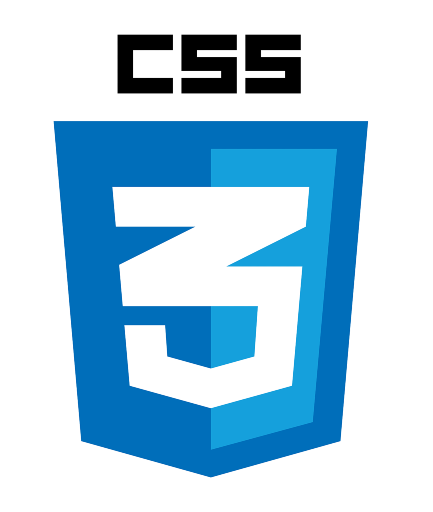
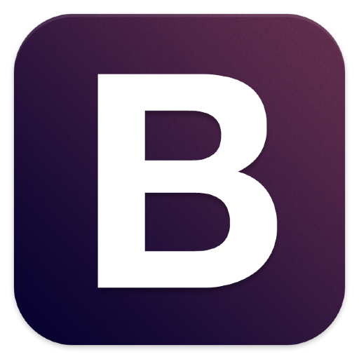

[Educación]
2021 - 2025
UNIVERSIDAD POLITECNICA DE ATLAUTLAUTLA
Ingeniería en Tecnologías de la Infomación
2018 - 2021
Colegio de Estudios Científicos y Tecnológicos del
Estado de México
Técnico en Programación
[Experiencia]
FUNDACIÓN RAFAEL GJ
Full Stack Developer Internship
- Participe en el desarrollo e implementación de mejoras en el front-end y back-end de sitios web, contribuyendo a la correcta actualización y gestión de datos, así como la experiencia del usuario.
- Diseñé e impartí cursos formativos, contribuyendo al fortalecimiento de conocimientos y habilidades en jóvenes.
- Participé en actividades del sector turístico, contribuyendo a brindar una atención de calidad y a garantizar una experiencia satisfactoria para los clientes.
- Colaboré en la grabación y edición de videos institucionales para el sector gubernamental, contribuyendo a la producción de contenidos audiovisuales claros, profesionales y alineados con los objetivos de comunicación.
Tlalmanalco, México
Enero 2024 - Abril 2025
CBT No. 231
Front-End Developer Internship
- Lidere el desarrollo de un sitio web desde su etapa inicial, definiendo diseño, estructura y funcionalidades en función de los requerimientos establecidos, optimizando la experiencia del usuario y el cumplimiento de objetivos del proyecto.
Atlautla, México
Sept-Diciembre 2023
[Herramienta]

